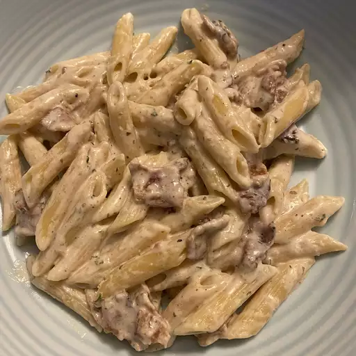

Pasta Carbonara

Quick Pasta Carbonara
The rich flavors of bacon and green peas combine with cheesy, creamy carbonara sauce made without egg to serve with hot, cooked pasta.
Ingredients
- ½ pound medium-size pasta
- 4 slices OSCAR MAYER Bacon, chopped
- 4 ounces PHILADELPHIA Cream Cheese, cubed
- 1 cup frozen peas
- ¾ cup milk
- ½ cup KRAFT Grated Parmesan Cheese
- ½ teaspoon garlic powder
Steps
- Cook pasta as directed on the package. Drain pasta and set aside.
- Meanwhile, cook bacon in a large skillet until crisp. Drain bacon on paper towels. Reserve 2 tablespoons drippings in the skillet.
- Add cream cheese, peas, milk, Parmesan cheese, and garlic powder to reserved drippings. Cook on low heat until cream cheese is melted and mixture is heated through.
- Place pasta in a large bowl. Add cream cheese sauce and bacon; mix lightly.